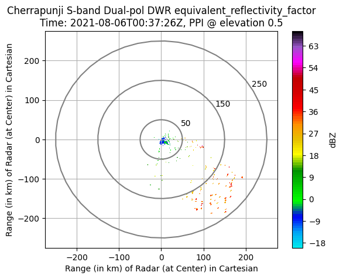
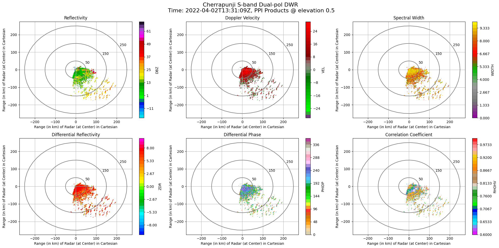
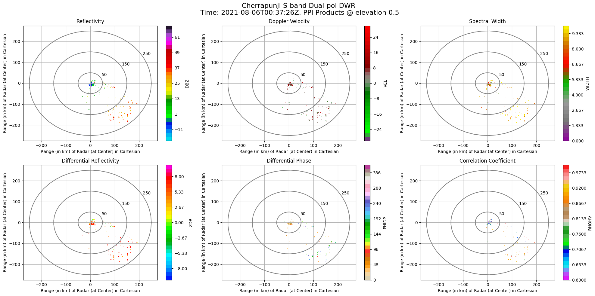
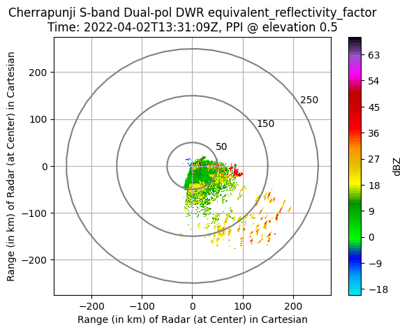
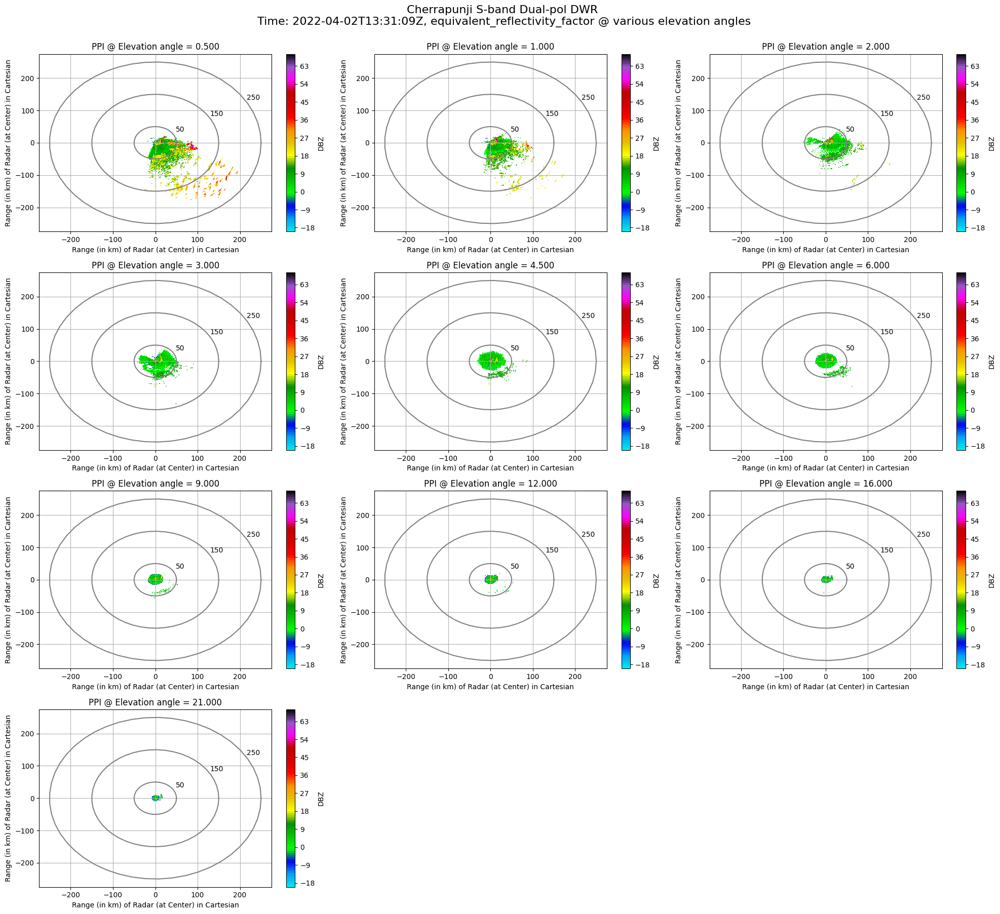
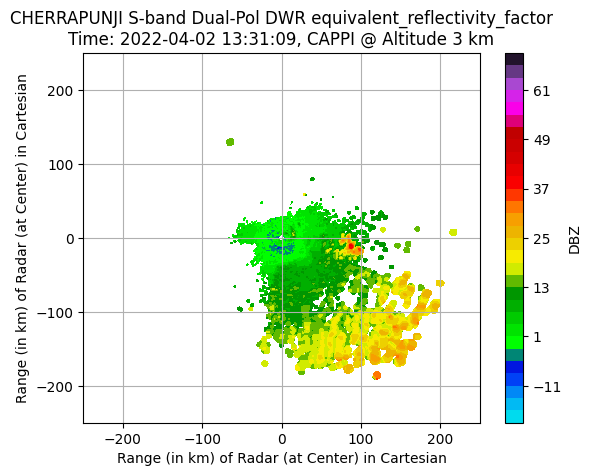
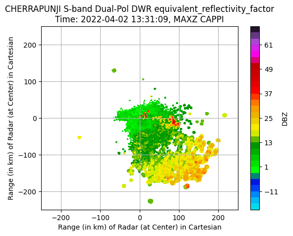
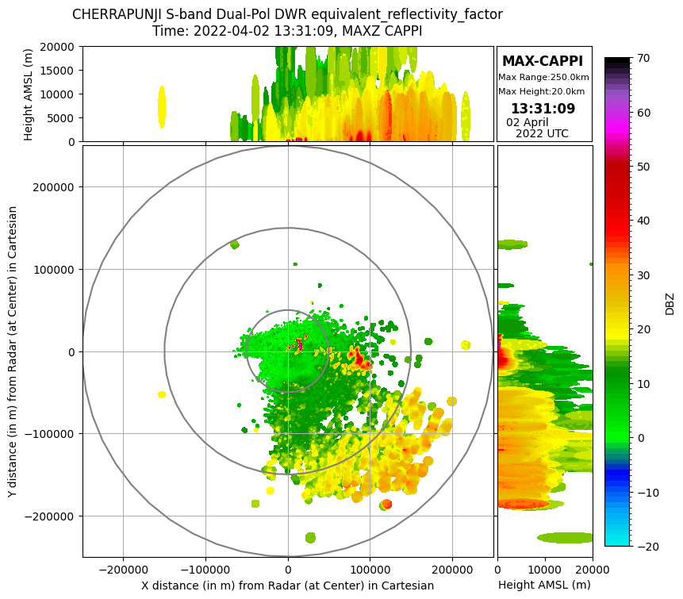

Skip to main content
Skip to main content
PYIWR
Importing the pyiwr Library
import pyiwr
## You are using the Python ARM Radar Toolkit (Py-ART), an open source
## library for working with weather radar data. Py-ART is partly
## supported by the U.S. Department of Energy as part of the Atmospheric
## Radiation Measurement (ARM) Climate Research Facility, an Office of
## Science user facility.
##
## If you use this software to prepare a publication, please cite:
##
## JJ Helmus and SM Collis, JORS 2016, doi: 10.5334/jors.119
Radar object formating for dual-pol raw dwr file
File location
filename = '/media/sigma/Backup Plus/Nitig/radar/Nitig_data/rawdwr/Files/cherrapunjee_weather_2021_08_06_00_37_26_dsfisro6n.dwr'filename = 'cherrapunjee_weather_2021_08_06_00_37_26_dsfisro6n.dwr'radar = pyiwr.format_transform.raw2nc (filename, save_file = True)Processing file: cherrapunjee_weather_2021_08_06_00_37_26_dsfisro6n.dwr
File cherrapunjee_weather_2021_08_06_00_37_26_dsfisro6n.dwr converted successfully and saved in the "radar_ncfiles" folder
radar.info()altitude:
data: <ndarray of type: int32 and shape: (1,)>
long_name: Altitude
units: meters
standard_name: Altitude
positive: up
altitude_agl: None
antenna_transition:
data: <ndarray of type: float64 and shape: (3600,)>
azimuth:
data: <ndarray of type: float32 and shape: (3600,)>
long_name: azimuth_angle_from_true_north
units: degrees
standard_name: beam_azimuth_angle
axis: radial_azimuth_coordinate
comment: Azimuth of antenna relative to true north
elevation:
data: <ndarray of type: float64 and shape: (3600,)>
long_name: elevation_angle_from_horizontal_plane
units: degrees
standard_name: beam_elevation_angle
axis: radial_elevation_coordinate
comment: Elevation of antenna relative to the horizontal plane
fields:
DBZ:
data: <ndarray of type: float32 and shape: (3600, 1600)>
_FillValue: nan
units: dBZ
standard_name: equivalent_reflectivity_factor
Polarization: Horizontal
VEL:
data: <ndarray of type: float32 and shape: (3600, 1600)>
_FillValue: nan
units: m/s
standard_name: radial_velocity_of_scatterers_away_from_instrument
Polarization: Horizontal
WIDTH:
data: <ndarray of type: float32 and shape: (3600, 1600)>
_FillValue: nan
units: m/s
standard_name: doppler_spectrum_width
Polarization: Horizontal
ZDR:
data: <ndarray of type: float32 and shape: (3600, 1600)>
_FillValue: nan
units: dB
standard_name: log_differential_reflectivity_hv
Polarization: Horizontal and Vertical
PHIDP:
data: <ndarray of type: float32 and shape: (3600, 1600)>
_FillValue: nan
units: degrees
standard_name: differential_phase_hv
Polarization: Horizontal and Vertical
RHOHV:
data: <ndarray of type: float32 and shape: (3600, 1600)>
_FillValue: nan
units: unitless
standard_name: cross_correlation_ratio_hv
Polarization: Horizontal and Vertical
fixed_angle:
data: <ndarray of type: float32 and shape: (10,)>
long_name: Target angle for sweep
units: degrees
standard_name: target_fixed_angle
instrument_parameters: None
latitude:
data: <ndarray of type: float64 and shape: (1,)>
long_name: Latitude
units: degrees_north
standard_name: Latitude
longitude:
data: <ndarray of type: float64 and shape: (1,)>
long_name: Longitude
units: degrees_east
standard_name: Longitude
nsweeps: 10
ngates: 1600
nrays: 3600
radar_calibration: None
range:
data: <ndarray of type: float64 and shape: (1600,)>
long_name: range_to_measurement_volume
units: meters
standard_name: projection_range_coordinate
axis: radial_range_coordinate
spacing_is_constant: true
comment: Coordinate variable for range. Range to center of each bin.
scan_rate: None
scan_type: ppi
sweep_end_ray_index:
data: <ndarray of type: int64 and shape: (10,)>
long_name: Index of last ray in sweep, 0-based
units: count
sweep_mode:
data: <ndarray of type: |S1 and shape: (10, 32)>
long_name: Sweep mode
units: unitless
standard_name: sweep_mode
comment: Options are: "sector", "coplane", "rhi", "vertical_pointing", "idle", "azimuth_surveillance", "elevation_surveillance", "sunscan", "pointing", "manual_ppi", "manual_rhi"
sweep_number:
data: <ndarray of type: int64 and shape: (10,)>
long_name: Sweep number
units: count
standard_name: sweep_number
sweep_start_ray_index:
data: <ndarray of type: int64 and shape: (10,)>
long_name: Index of first ray in sweep, 0-based
units: count
target_scan_rate: None
time:
data: <ndarray of type: float64 and shape: (3600,)>
long_name: time_in_seconds_since_volume_start
units: seconds since 2021-08-06T00:37:26Z
standard_name: time
calendar: gregorian
metadata:
instrument_name: Cherrapunji S-band Dual-pol DWR
Created using: pyiwr (Indian Weather Radar Toolkit) Module developed at SIGMA Research Lab, IIT Indore
version: Version 1.0.0
title: Cherrapunji S-band Dual-pol DWR data
institution: ISRO
references: Py-art_https://arm-doe.github.io/pyart/notebooks/basic_ingest_using_test_radar_object.html
source: DWR Short Volume Scan File (250km)
comment:
Conventions: CF/Radial
history: DWR raw (6n.dwr) data file encoded into Py-ART compatible NetCDF file
field_names: DBZ, VEL, WIDTH, ZDR, PHIDP, RHOHV
volume_number: 0
platform_type: fixed
instrument_type: radar
primary_axis: axis_z
Visualizations
For PPI at specific elevation
pyiwr.visualize.elevation(radar, field_name='DBZ', elevation_index=0, rings=True, grid=True,
range_in_km= True, save_image= False, img_name='img.png')
For PPI of any field at all elevation
pyiwr.visualize.all_elevation(radar, field_name='DBZ', rings=True, grid=True, range_in_km=True,
save_image= False, img_name='img.png')
For PPI of all fields
pyiwr.visualize.fields_elevation(radar, elevation_index=0, range_in_km=True, rings=True, grid=True,
save_image= False, img_name='img.png')
For open source nc files needing correction or restructuring
File location
filename = '/media/sigma/Backup Plus/Nitig/radar/Nitig_data/NC FILES/sweep10/RSCHR_02APR2022_133109_L2B_STD.nc'#For mosdac nc files
radar = pyiwr.format_transform.correctednc (filename, save_file = False)radar.info()
radar.info()Processing file: RSCHR_02APR2022_133109_L2B_STD.nc
File RSCHR_02APR2022_133109_L2B_STD.nc corrected and restructured successfully
altitude:
data: <ndarray of type: float64 and shape: (1,)>
_FillValue: nan
units: meters
altitude_agl: None
antenna_transition: None
azimuth:
data: <ndarray of type: float32 and shape: (3600,)>
_FillValue: nan
standard_name: ray_azimuth_angle
units: degrees
long_name: azimuth_angle_from_true_north
axis: radial_azimuth_coordinate
elevation:
data: <ndarray of type: float32 and shape: (3600,)>
_FillValue: nan
standard_name: ray_elevation_angle
units: degrees
long_name: elevation_angle_from_horizontal_plane
axis: radial_azimuth_coordinate
fields:
DBZ:
data: <ndarray of type: float32 and shape: (3600, 1600)>
_FillValue: 0.0
units: dBZ
standard_name: equivalent_reflectivity_factor
Polarization: Horizontal
coordinates: time range
VEL:
data: <ndarray of type: float32 and shape: (3600, 1600)>
_FillValue: 0.0
units: m/s
standard_name: radial_velocity_of_scatterers_ away_from_instrument
Polarization: Horizontal
coordinates: time range
WIDTH:
data: <ndarray of type: float32 and shape: (3600, 1600)>
_FillValue: 0.0
units: m/s
standard_name: doppler_spectrum_width
Polarization: Horizontal
coordinates: time range
ZDR:
data: <ndarray of type: float32 and shape: (3600, 1600)>
_FillValue: 0.0
units: dB
standard_name: log_differential_reflectivity_hv
Polarization: Horizontal and Vertical
coordinates: time range
PHIDP:
data: <ndarray of type: float32 and shape: (3600, 1600)>
_FillValue: 0.0
units: degrees
standard_name: differential_phase_hv
Polarization: Horizontal and Vertical
coordinates: time range
RHOHV:
data: <ndarray of type: float32 and shape: (3600, 1600)>
_FillValue: 0.0
units:
standard_name: cross_correlation_ratio_hv
Polarization: Horizontal and Vertical
coordinates: time range
fixed_angle:
data: <ndarray of type: float32 and shape: (10,)>
_FillValue: nan
units: degrees
instrument_parameters: None
latitude:
data: <ndarray of type: float64 and shape: (1,)>
_FillValue: nan
units: degrees_north
longitude:
data: <ndarray of type: float64 and shape: (1,)>
_FillValue: nan
units: degrees_east
nsweeps: 10
ngates: 1600
nrays: 3600
radar_calibration: None
range:
data: <ndarray of type: float64 and shape: (1600,)>
_FillValue: nan
standard_name: projection_range_coordinate
long_name: range_to_measurement_volume
units: meters
spacing_is_constant: true
meters_to_center_of_first_gate: true
axis: radial_range_coordinate
scan_rate: None
scan_type: ppi
sweep_end_ray_index:
data: <ndarray of type: int64 and shape: (10,)>
sweep_mode:
data: <ndarray of type: |S1 and shape: (10, 32)>
sweep_number:
data: <ndarray of type: int32 and shape: (10,)>
sweep_start_ray_index:
data: <ndarray of type: int64 and shape: (10,)>
target_scan_rate: None
time:
data: <ndarray of type: float64 and shape: (3600,)>
_FillValue: nan
standard_name: time
long_name: time_in_seconds_since_volume_start
units: seconds since 2022-04-02T13:31:09Z
calendar: gregorian
metadata:
instrument_name: Cherrapunji S-band Dual-pol DWR
Created using: pyiwr (Python Indian Weather Radar Toolkit) Module developed by Researchers at SIGMA Research Lab, IIT Indore
version: Version 1.0.0
title: Cherrapunji S-band Dual-pol DWR data
institution: ISRO
references: Py-art_https://arm-doe.github.io/pyart/notebooks/basic_ingest_using_test_radar_object.html
source: DWR volume scan data
comment:
Conventions: CF/Radial
field_names: DBZ, VEL, WIDTH, ZDR, PHIDP, RHOHV
history: DWR mosdac files (.nc) data encoded into Py-ART compatible NetCDF file
volume_number: 0
platform_type: fixed
instrument_type: radar
primary_axis: axis_z
Visualizations
For PPI at specific elevation
pyiwr.visualize.elevation(radar, field_name='DBZ', elevation_index=0, rings=True, grid=True,
range_in_km= True, save_image= False, img_name='img.png')
For PPI of any field at all elevation
pyiwr.visualize.all_elevation(radar, field_name='DBZ', rings=True, grid=True, range_in_km=True,
save_image= False, img_name='img.png')
For PPI of all fields
pyiwr.visualize.fields_elevation(radar, elevation_index=0, range_in_km=True, rings=True, grid=True,
save_image= False, img_name='img.png')For gridded objects NC file from a radar object NetCDF files
File location
xarray_grids = pyiwr.format_transform.sweeps2gridnc (filename, grid_shape =(81 , 501 , 501) , height =20
, length =250 , save_file = False)Processing file: RSCHR_02APR2022_133109_L2B_STD.nc
Xarray gridding of volumetric sweeps of radar PPI scan file: RSCHR_02APR2022_133109_L2B_STD.nc done successfully
xarray_grids.info()xarray.Dataset {
dimensions:
time = 1 ;
z = 81 ;
y = 501 ;
x = 501 ;
variables:
object time(time) ;
float64 z(z) ;
z:standard_name = projection_z_coordinate ;
z:long_name = Z distance on the projection plane from the origin ;
z:axis = Z ;
z:units = m ;
z:positive = up ;
float64 lat(y, x) ;
lat:long_name = latitude of grid cell center ;
lat:units = degree_N ;
lat:standard_name = Latitude ;
float64 lon(y, x) ;
lon:long_name = longitude of grid cell center ;
lon:units = degree_E ;
lon:standard_name = Longitude ;
float64 y(y) ;
y:standard_name = projection_y_coordinate ;
y:long_name = Y distance on the projection plane from the origin ;
y:axis = Y ;
y:units = m ;
float64 x(x) ;
x:standard_name = projection_x_coordinate ;
x:long_name = X distance on the projection plane from the origin ;
x:axis = X ;
x:units = m ;
float32 DBZ(time, z, y, x) ;
DBZ:_FillValue = 0.0 ;
DBZ:units = dBZ ;
DBZ:standard_name = equivalent_reflectivity_factor ;
DBZ:Polarization = Horizontal ;
DBZ:coordinates = time range ;
float32 VEL(time, z, y, x) ;
VEL:_FillValue = 0.0 ;
VEL:units = m/s ;
VEL:standard_name = radial_velocity_of_scatterers_ away_from_instrument ;
VEL:Polarization = Horizontal ;
VEL:coordinates = time range ;
float32 WIDTH(time, z, y, x) ;
WIDTH:_FillValue = 0.0 ;
WIDTH:units = m/s ;
WIDTH:standard_name = doppler_spectrum_width ;
WIDTH:Polarization = Horizontal ;
WIDTH:coordinates = time range ;
float32 ZDR(time, z, y, x) ;
ZDR:_FillValue = 0.0 ;
ZDR:units = dB ;
ZDR:standard_name = log_differential_reflectivity_hv ;
ZDR:Polarization = Horizontal and Vertical ;
ZDR:coordinates = time range ;
float32 PHIDP(time, z, y, x) ;
PHIDP:_FillValue = 0.0 ;
PHIDP:units = degrees ;
PHIDP:standard_name = differential_phase_hv ;
PHIDP:Polarization = Horizontal and Vertical ;
PHIDP:coordinates = time range ;
float32 RHOHV(time, z, y, x) ;
RHOHV:_FillValue = 0.0 ;
RHOHV:units = ;
RHOHV:standard_name = cross_correlation_ratio_hv ;
RHOHV:Polarization = Horizontal and Vertical ;
RHOHV:coordinates = time range ;
float32 ROI(time, z, y, x) ;
ROI:standard_name = radius_of_influence ;
ROI:long_name = Radius of influence for mapping ;
ROI:units = m ;
ROI:least_significant_digit = 1 ;
ROI:_FillValue = -9999.0 ;
// global attributes:
:instrument_name = Cherrapunji S-band Dual-pol DWR ;
:Created using = pyiwr (Python Indian Weather Radar Toolkit) Module developed by Researchers at SIGMA Research Lab, IIT Indore ;
:version = Version 1.0.0 ;
:title = Cherrapunji S-band Dual-pol DWR data ;
:institution = ISRO ;
:references = Py-art_https://arm-doe.github.io/pyart/notebooks/basic_ingest_using_test_radar_object.html ;
:source = DWR volume scan data ;
:comment = ;
:Conventions = CF/Radial ;
:field_names = DBZ, VEL, WIDTH, ZDR, PHIDP, RHOHV ;
:history = DWR mosdac files (.nc) data encoded into Py-ART compatible NetCDF file ;
:volume_number = 0 ;
:platform_type = fixed ;
:instrument_type = radar ;
:primary_axis = axis_z ;
}For CAPPI in cartesian plane.
pyiwr.visualize.cappi(xarray_grids, altitude_level =3, field_name ='DBZ', radar_location ='CHERRAPUNJI',
grid=True, rings =False, ticks_in_km =True, save_image =False, img_name ='img.png')
For MAX CAPPI in cartesian plane
pyiwr.visualize.cappi_max(xarray_grids, field_name ='DBZ', radar_location ='CHERRAPUNJI',
grid=True, rings =False, ticks_in_km =True, save_image =False, img_name ='img.png')
For MAX CAPPI (with marginal cross-sections) in cartesian plane
pyiwr.visualize.marginal_max(xarray_grids, field_name ='DBZ', radar_location ='CHERRAPUNJI', rings
=True, grid =True, cross_sections =True, save_image =False, img_name ='img.png')
For MAX CAPPI (with marginal cross-sections) with map
pyiwr.visualize.marginal_max_map(xarray_grids, radar_location = 'CHERRAPUNJI', field_name ='DBZ',
background ='terrain-background', cross_sections = False, save_image = False, img_name ='img.png')